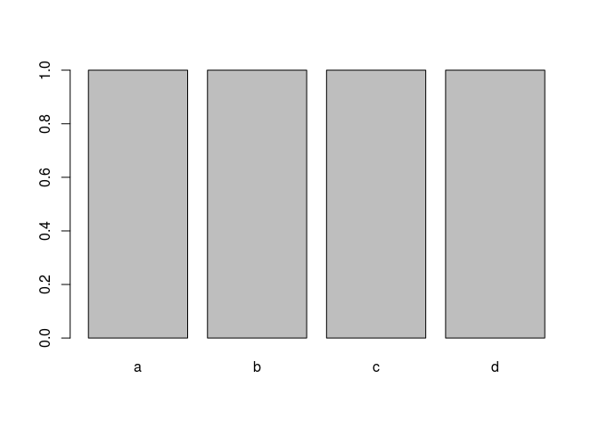
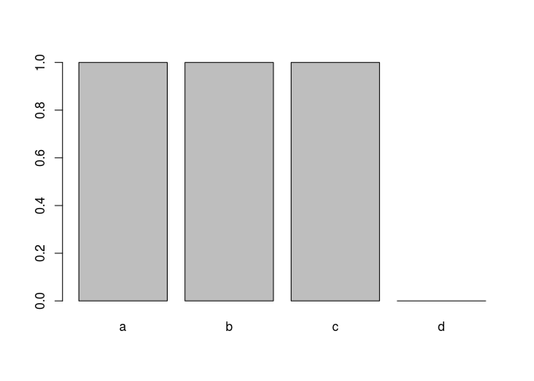
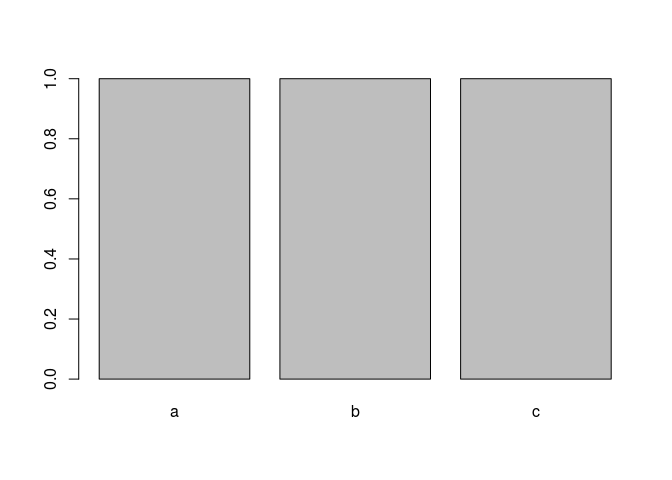

Improved Codes
Foreword
Code snippets and excerpts from the tutorial. From DataCamp.
Create a sequence¶
1 2 3 4 5 6 7 8 9 10 11 | # Sequence a vector x <- runif(10) seq(x) ## [1] 1 2 3 4 5 6 7 8 9 10 # Sequence an integer seq(nrow(mtcars)) ## [1] 1 2 3 4 5 6 7 8 9 10 11 12 13 14 15 16 17 18 19 20 21 22 23 ## [24] 24 25 26 27 28 29 30 31 32 |
Create a vector¶
vector("type", length) improves memory usage and increases speed over
c(). Know upfront what type of values will go into a vector, and how
long the vector will be.
1 2 3 4 5 6 7 8 9 10 11 12 13 14 15 16 17 18 | # A numeric vector with 5 elements vector("numeric", 5) ## [1] 0 0 0 0 0 # A character vector with 3 elements vector("character", 3) ## [1] "" "" "" n <- 5 x <- vector("integer", n) for (i in seq(n)) { x[i] <- i } x ## [1] 1 2 3 4 5 |
A speed test¶
1 2 3 4 5 6 7 8 9 10 11 12 13 | n <- 1e5 x_empty <- c() system.time(for(i in seq(n)) x_empty <- c(x_empty, i)) ## user system elapsed ## 15.724 0.000 15.724 x_zeros <- vector("integer", n) system.time(for(i in seq(n)) x_zeros[i] <- i) ## user system elapsed ## 0.012 0.000 0.011 |
Which¶
Is it a series, a vector? What value?
1 2 3 4 5 6 7 8 9 10 11 12 13 14 15 16 17 18 19 20 21 22 23 24 25 26 27 28 29 30 31 32 33 34 35 36 37 38 39 40 41 42 43 44 45 46 47 48 49 50 51 52 53 54 55 56 57 58 59 60 61 62 63 64 65 66 67 68 69 | x <- 3:7 # Using which (not necessary) x[which(x > 5)] ## [1] 6 7 # No which x[x > 5] ## [1] 6 7 # Using which length(which(x > 5)) ## [1] 2 # Without which sum(x > 5) ## [1] 2 condition <- x > 5 condition ## [1] FALSE FALSE FALSE TRUE TRUE x[condition] ## [1] 6 7 sum(condition) ## [1] 2 mean(condition) ## [1] 0.4 which(condition) ## [1] 4 5 x <- c(1, 2, 12) # Using `which()` and `length()` to test if any values are greater than 10 if (length(which(x > 10)) > 0) print("At least one value is greater than 10") ## [1] "At least one value is greater than 10" # Wrapping a boolean vector with `any()` if (any(x > 10)) print("At least one value is greater than 10") ## [1] "At least one value is greater than 10" # Using `which()` and `length()` to test if all values are positive if (length(which(x > 0)) == length(x)) print("All values are positive") ## [1] "All values are positive" # Wrapping a boolean vector with `all()` if (all(x > 0)) print("All values are positive") ## [1] "All values are positive" |
Factor¶
The simple way to remove values from a factor.
Starting with.
1 2 3 4 5 6 7 8 | # A factor with four levels x <- factor(c("a", "b", "c", "d")) x ## [1] a b c d ## Levels: a b c d plot(x) |

The problem.
1 2 3 4 5 6 7 8 9 10 | # Drop all values for one level x <- x[x != "d"] # But we still have this level! x ## [1] a b c ## Levels: a b c d plot(x) |

The solution.
1 2 3 4 5 6 7 8 | # Drop all values for one level x <- factor(x[x != "d"]) x ## [1] a b c ## Levels: a b c plot(x) |

Extract from a data.frame¶
Simple and fast.
1 2 3 4 5 6 7 8 9 | # rows first, column second - not ideal mtcars[mtcars$cyl == 4, ]$hp ## [1] 93 62 95 66 52 65 97 66 91 113 109 # column first, rows second - much better mtcars$hp[mtcars$cyl == 4] ## [1] 93 62 95 66 52 65 97 66 91 113 109 |
A speed test¶
1 2 3 4 5 6 7 8 9 10 11 12 13 14 15 16 17 18 | # Simulate a data frame... n <- 1e7 d <- data.frame( a = seq(n), b = runif(n) ) # rows first, column second - not ideal system.time(d[d$b > .5, ]$a) ## user system elapsed ## 0.568 0.096 0.663 # column first, rows second - much better system.time(d$a[d$b > .5]) ## user system elapsed ## 0.104 0.012 0.114 |